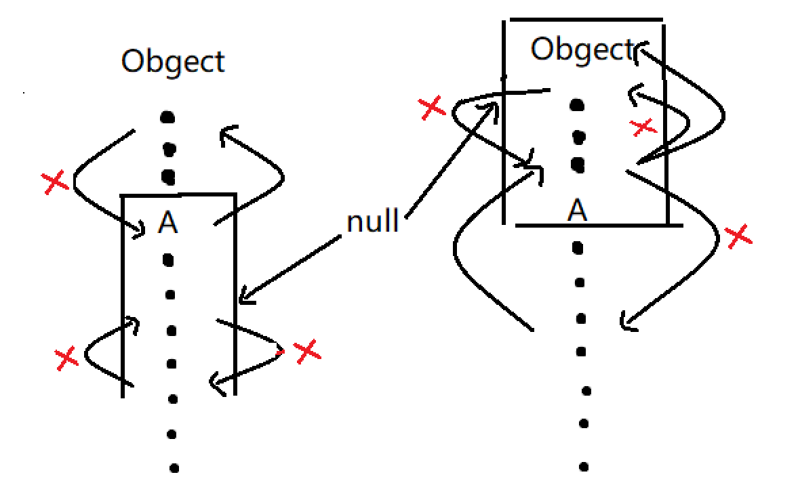

泛型定义使用泛型编写泛型擦拭法extend 通配符super 通配符反射与泛型集合简介Listequals方法MapHashMap、HashTable、ConcurrentHashMapThreadLocalequals()、hashCode()EnumMapTreeMapPropertiessetQueuePriorityQueueDeque栈迭代器Collections工具类IOFileInputStreamOutputStreamFilterInputStreamzip操作classpath读取文件序列化ReaderwriterPrintStreamPrintWriterFiles工具类时间概念本地时间ZonedDateTime格式化日期时间戳
泛型
定义
1：泛型就是定义一种模板，例如ArrayList<T>，然后在代码中为用到的类创建对应的ArrayList<类型>，一个模板处理多种数据类型。
使用泛型
2：可以把ArrayList<Integer>向上转型为List<Integer>（T不能变！），但不能把ArrayList<Integer>向上转型为ArrayList<Number>（T不能变成父类）。ArrayList
3：如果不定义泛型类型时，泛型类型实际上就是Object
4：泛型Array可接受定义类型的子类元素：
1List<Number> list = new ArrayList<>();2list.add(new Integer(123));3Number first = list.get(0);编写泛型
5:可以在接口中定义泛型类型，实现此接口的类必须实现正确的泛型类型:class Person implements Comparable<Person>{}
6：编写泛型类泛型接口：把类或接口里面的特定类型SomeType替换为T,把T作为一种数据类型 来使用，并把类或者接口申明<T>：public class Pair<T> {}，public interface abc<T>{}
7：泛型类型<T>不能用于静态方法：
xxxxxxxxxx21 public static Pair<T> create(T first, T last) {} //报错2 public static <K> Pair<K> create(K first, K last) {} // 未报错，注意静态方法的T和成员方法的T已经不存在关系了，所以这里使用K将静态方法的泛型类型和实例类型的泛型类型区分开。 普通的方法是通过类的实例来调用的，在创建对象时传入了T的具体类型：new ArrayList<String>()，也就是说对象已经知道这个时候类上面定义 的Pair.create(...),所以也就不知道
8 : 多个泛型类型
把类里面的特定类型SomeType替换为T，K，把T，K作为一种数据类型 来使用，并把类申明<T，K>：public class Pair<T，K> {}，使用的时候，需要指出两种类型：Pair<String, Integer> p = new Pair<>("test", 123);
擦拭法
9：Java语言的泛型实现方式是擦拭法
- 编译器把类型
<T>视为Object； - 编译器根据
<T>实现，根据传入类型安全的强制转型。 - 虚拟机对泛型其实一无所知，所有的工作都是编译器做的。
Java的泛型是由编译器在编译时实行的，编译器内部永远把所有类型T视为Object处理，但是，在需要转型的时候，编译器会根据T的类型自动为我们实行安全地强制转型。
10：Java泛型的局限：
<T>不能是基本类型，Object类型无法持有基本类型。无法取得带泛型的
Class，无论T的类型是什么，getClass()返回同一个Class实例，因为编译后它们全部都是Pair<Object>。无法判断带泛型的类型,例如
x instanceof Pair<String>并不存在Pair<String>.class，而是只有唯一的Pair.class不能实例化
T类型：在泛型类内部不能new T();因为擦拭后变成了new Object();创建new Pair<String>()和创建new Pair<Integer>()就全部成了Object,要实例化T类型，我们必须借助额外的Class<T>参数:x1public class Pair<T> {2private T first;3private T last;4// 通过反射来实例化T类型，使用的时候，也必须传入Class<T>5public Pair(Class<T> clazz) {6first = clazz.newInstance();7last = clazz.newInstance();8}9}1011Pair<String> pair = new Pair<>(String.class);
11：不恰当的覆写方法
xxxxxxxxxx111public class Pair<T> {2 public boolean equals(T t) {3 return this == t;4 }5}6// equals(T t)方法实际上会被擦拭成equals(Object t),而这个方法是继承自Object的,方法定义就变成了override,改变方法名即可。7public class Pair {8 public boolean equals(Object t) {9 return this == t;10 }11}
12：泛型继承
xxxxxxxxxx61// 子类IntPair并没有泛型类型,new IntPair(1, 2);2public class IntPair extends Pair<Integer> {3}4// 子类同样保持泛型5public class IntPair extends Pair<T> {6}extend 通配符
使用Pair<? extends Number>使得方法接收所有泛型类型为Number或Number子类的Pair类型，<? extends Number>的泛型定义称之为上界通配符（Upper Bounds Wildcards），即把泛型类型T的上界限定在Number了。类型擦除后T不再变成Object而是Number。
方法参数签名int add(Pair<? extends Number> p)的方法可以接受Pair<Double>,Pair<Integer>类型的参数p,经过泛型擦拭后变成<Number>而不是Object,在方法内部p就被视为Pair<Number>，相当于自动向上转型，只能进行与Number类型相符合的操作，不能进行Double ,Integer特有操作，因为该方法既可以接受Pair<Double>类型的参数,也可以接受Pair<Integer>类型参数，在方法内部无法确定数据的具体类型，但他们都是Number或者Number的子类，将数据类型视为Number是安全的。方法参数签名<? extends Number>无法改变实际传入函数的参数的泛型类型。
方法返回值使用类似<? extends Number>通配符作为返回值泛型类型时表示：方法返回值泛型类型为Number或Number子类。
在方法内部p只有只读属性：无法调用传入Number引用的方法（null除外），因为add方法既可以接受Pair<Double>,也可以接受Pair<Integer>，p中数据类型是不确定的，传入的Number及其子类应用很可能与数据不相匹配，所以对p是只读属性。
定义泛型类型Pair<T>的时候，也可以使用extends通配符来限定T的类型：public class Pair<T extends Number> { ... }泛型类型限定为Number以及Number的子类。
super 通配符
xxxxxxxxxx21// Pair<? super Integer>表示，方法参数接受所有泛型类型为Integer或Integer父类的Pair类型。2void set(Pair<? super Integer> p, Integer first, Integer last) {}使用<? super Integer>通配符表示：
- 允许调用
set(? super Integer)方法传入Integer的引用； - 不允许调用
get()方法获得Integer的引用，唯一例外是可以用Object 接收返回值：Object obj = p.getFirst(); - 方法参数签名
<? super Integer>无法改变实际传入函数的参数的泛型类型。 - 表示方法内部代码对于参数只能写，不能读。唯一例外是可以获取
Object的引用：Object o = obj.get()。
super不能用在class定义处，只能用在方法参数。
15: <? extends T>类型和<? super T>类型的区别在于：
<? extends T>允许调用读方法T get()获取T的引用，但不允许调用写方法set(T)传入T的引用（传入null除外）；<? super T>允许调用写方法set(T)传入T的引用，但不允许调用读方法T get()获取T的引用（获取Object除外）。可以使用通配符进行权限控制，防止随意修改、获取数据，如果需要返回
T，它是生产者（Producer），要使用extends通配符；如果需要写入T，它是消费者（Consumer），要使用super通配符。super不能用在class定义处，只能用在方法参数,extends可用于方法参数，也可以用于类和接口定义。
通配符的读写特性的本质是Java里面向上转型是安全的，向下转型不安全。
List<? extends T> list：表示内部元素是T或者T的子类，只规定了上限，下限未定，内部元素具体类型未定。可以把list中元素赋值给[object,A]区间的变量，属于向上转型；不可以把[object,A]区间的变量赋值给list，属于向下转型不被允许；不可以把[A，]区间的变量赋值给list，因为list 中元素具体类未知，可能存在向下转型，不被允许；不可以把list中元素赋值给[A，]区间的变量，因为list 中元素具体类未知，可能存在向下转型，不被允许；一个特列是可以将null赋值给list。
List<? super T> list：表示内部元素是T或者T的父类，规定了上限是Object，下限是A，内部元素具体类型未定。不可以把list中元素赋值给(object,A]区间的变量，因为list 中元素具体类未知，可能存在向下转型，不被允许,可以把list中元素赋值给object变量；不可以把[object,A]区间的变量赋值给list，因为list 中元素具体类未知，可能存在向下转型，不被允许；可以把[A，]区间的变量赋值给list，属于向上转型；不可以把list中元素赋值给[A，]区间的变量，属于向下转型，不被允许；一个特列是可以将null赋值给list。

16 ：无限通配符
xxxxxxxxxx21void sample(Pair<?> p) {2}- 不允许调用
set(T)方法并传入引用（null除外）； - 不允许调用
T get()方法并获取T引用（只能获取Object引用）。 - 无限定通配符
<?>很少使用，可以用<T>替换，同时它是所有<T>类型的超类。 - 那只能做一些
null判断：return p.getFirst() == null || p.getLast() == null; <?>是所有<T>的超类,SomeClass <?> obj=new SomeClass<Integer>(0);
反射与泛型
部分反射API也是泛型
Class<T>就是泛型：Class<String> clazz = String.class;构造方法
Constructor<T>也是泛型：xxxxxxxxxx21Class<Integer> clazz = Integer.class;2Constructor<Integer> cons = clazz.getConstructor(int.class);
18：带泛型的数组
无法直接创建泛型数组，必须通过强制转型实现带泛型的数组：Pair<String>[] ps = (Pair<String>[]) new Pair[2];
数组实际上在运行期没有泛型，编译器可以强制检查变量ps，因为它的类型是泛型数组。但是，编译器不会检查变量arr=new SomeClass[2]，因为它不是泛型数组。如果两个变量一个带泛型，一个不带泛型，都指向同一个数组，不带泛型数组可以存入任意类型数据，则带泛型数组读取时如果类型不匹配就会出现错误。所以，操作arr可能导致从ps获取元素时报错,所以必须扔掉arr的引用，匿名对象直接赋值。
xxxxxxxxxx91Pair[] arr = new Pair[2];2Pair<String>[] ps = (Pair<String>[]) arr;3
4ps[0] = new Pair<String>("a", "b");5arr[1] = new Pair<Integer>(1, 2);6
7
8Pair<String> p = ps[1]; // ClassCastException:9String s = p.getFirst();带泛型的数组实际上是编译器的类型擦除：SomeClass<String>[] => SomeClass<Object>[]与SomeClass[]的Class相同。
集合
简介
Java 集合， 一个是 Collection接口，主要用于存放单一元素；另一个是 Map 接口，主要用于存放键值对。对于Collection 接口，下面又有三个主要的子接口：List、Set 和 Queue。
- List: 存储的元素是有序的、可重复的。Arraylist：object[] 数组、LinkedList：双向链表。
- Set: 存储的元素是无序的、不可重复的。HashSet：（hashmap value=new Object()）,hashcode、equals保证唯一性,增删改查O(1);TreeSet：红黑树.compare接口实现唯一性,增删改查块O(logn)。
- Queue: 按特定的排队规则来确定先后顺序，存储的元素是有序的、可重复的。PriorityQueue: Object[] 数组来实现二叉堆。ArrayQueue: Object[] 数组 + 双指针。
- Map: 使用键值对（key-value）存储，key 是无序的、不可重复的，value 是无序的、可重复的，每个键最多映射到一个值。LinkedHashMap： 底层仍然是基于拉链式散列结构即由数组和链表或红黑树组成。另外增加了一条双向链表，使得上面的结构可以保持键值对的插入顺序。同时通过对链表进行相应的操作，实现了访问顺序相关逻辑。
List
2：通过List接口提供的of()方法，根据给定元素快速创建List：List.of("apple", "pear", "banana");创建List是只读的。
3: Iterator对象知道如何遍历一个List，并且不同的List类型，返回的Iterator对象实现也是不同的，但总是具有最高的访问效率。比如get(int)方法只有ArrayList的实现是高效的，换成LinkedList后，索引越大，访问速度越慢,使用迭代器实现针对每种List的高效访问，for each循环就是使用迭代器实现。Java的for each循环本身就可以帮我们使用Iterator遍历。只要实现了Iterable接口的集合类都可以直接用for each循环来高效遍历.
xxxxxxxxxx31for (Iterator<String> it = list.iterator(); it.hasNext(); ) {2 String s = it.next();3 }只要实现了Iterable接口的集合类都可以直接用for each循环来遍历，原因就在于Iterable接口定义了一个Iterator<E> iterator()方法，强迫集合类必须返回一个Iterator实例。
4：与array间转换
xxxxxxxxxx101List<Integer> list = List.of(12, 34, 56);2// toArray将实参填充过后返回,3Integer[] array =list.toArray(new Integer[list.size()]);4// toArray(T[])方法的泛型参数<T>并不是List接口定义的泛型参数<E>，所以，我们实际上可以传入其他类型的数组5Number[] array = list.toArray(new Number[3]);6
7// 此方法创建list是只读的8List<Integer> list = List.of(array);9// 可读可写10List<Integer> list = Arrays.asList(array);equals方法
正确使用List的contains()、indexOf()这些方法，放入的实例必须正确覆写equals()方法
简化引用类型的比较，我们使用Objects.equals()静态方法：return Objects.equals(this.name, p.name) && this.age == p.age;
equals()方法的正确编写方法：
- 先确定实例“相等”的逻辑，即哪些字段相等，就认为实例相等；
- 用
instanceof判断传入的待比较的Object是不是当前类型 - 如果是，继续比较，否则，返回
false；允许子类和自己比就用instanceof，不允许子类和自己比就用class比 - 对引用类型用
Objects.equals()比较，对基本类型直接用==比较。
| ArrayList | LinkedList | |
|---|---|---|
| 获取指定元素 | 速度很快 | 需要从头开始查找元素 |
| 添加元素到末尾 | 速度很快 | 速度很快 |
| 在指定位置添加/删除 | 需要移动元素 | 不需要移动元素 |
| 内存占用 | 少 | 较大 |
通常情况下，优先使用ArrayList而不是LinkedList；
Map
Map中不存在重复的key，因为放入相同的key，只会把原有的key-value对应的value给替换掉。
创建Map： Map.of()
遍历Map
xxxxxxxxxx21for (String key : map.keySet()) {}2for (Map.Entry<String, Integer> entry : map.entrySet()) {}遍历Map时，不可假设输出的key是有序的！Map存储的是key-value的映射关系，并且，它不保证顺序。在遍历的时候，遍历的顺序既不一定是put()时放入的key的顺序，也不一定是key的排序顺序。使用Map时，任何依赖顺序的逻辑都是不可靠的。
- 填装因子
loadFactor是HashMap负载程度的一个度量，即HashMap持有的元素数量和HashMap大小的比值，loadFactor是为了让HashMap尽可能不满而存在的，理论上一次成功/不成功的查找耗时均为O(1+a)，a为装载因子，加载因子越大,填满的元素越多,空间利用率越高，但冲突的机会加大了，查找时间复杂度上升。反之加载因子越小，填满的元素越少，冲突的机会减小，查找时间复杂度下降，但空间浪费多了。当HashMap中的元素数量大于capacity*loadFactor时，HashMap就要扩容，并进行重新计算元素存储位置。
同时是在实际中，HashMap碰撞与否，其实是与hashCode()的设计有很大关系，如果哈希函数得当，就可以使哈希地址尽可能的均匀分布在哈希地址空间上，从而减少冲突的产生，但一个良好的哈希函数的得来很大程度上取决于大量的实践，JDK设计者在平衡空间利用和性能方面给了一个比0.693更高的经验数字，此外各种情形下设置也不尽相同，比如ThreadLocalMap的装载因子为2/3。转载因子变大查询复杂度升高，但是占用的空间降低了，对于内存消耗频繁/GC频繁的应用来说，如果能接受hashmap的查询耗时损耗，将转载因子变大可能是非常值得的。
- 链表转红黑树阈值
虽然红黑树有更好的查找效率O(log(N))，但是TreeNode的大小约为链表节点的两倍，在红黑树进行插入、删除等操作时为了平衡红黑树还要进行额外的操作，维护成本明显高于链表。所以只有在一个拉链已经拉了足够节点（默认为8）并且HashMap容量大于等于64的时候才会转为tree，否则进行扩容（容量较小发生大量冲突直接扩容，此时的空间复杂度可以忍受）。在理想情况下，使用随机的hashcode值，loadfactor为0.75情况，桶中的Node的分布频率服从参数为0.5的泊松分布：桶中出现8个数据的概率已经小于一千万分之一，该情形达到的概率的较小，并且当这个hash桶的节点因为移除或者扩容后resize数量变小（默认为6）的时候，我们会将树再转为拉链，可见引入红黑树冲突解决是作为极端情况下的兜底方案（比如哈希DoS攻击：RESTful兴起，数据传输使用Json，在收到Json字符串后进行jsonDecode操作，攻击者借由发送一条充满数千个变量的POST报文，所有变量的hashcode相同，在将数据存入HashMap时，某个哈希桶中有大量数据，导致哈希函数就会超载，仅是处理此单一请求也需要大量时间,n个数据插入复杂度O(N^2)），所以将阈值设为8，此时不会经常出现链表转红黑树的情况，而达到阈值的哈希桶也可以红黑树实现更快的查找，实现兜底。
- 哈希计算
hashCode=31*hashCode+element.hashCode()，选择值31是因为它是一个奇素数。如果它是偶数并且乘法的结果溢出，高位信息就会丢失，因为乘以2相当于左移。31一个很好的特性是乘法可以通过移位，并获得更好的性能减法来代替：`31*i==(i<<5)-i，现代虚拟机会自动进行这种优化。实验表明从超过50,000个英语单词计算哈希值时，使用常量31、33、37、39和41将在每种情况下产生少于7次的冲突，这可能是许多Java实现选择此类常量的原因。
hash=(h=key.hashCode())^(h>>>16)，key的hash值高16位不变，低16位与高16位异或作为key的最终hash值，最后元素下标为：index=（n-1）&hash，(本质为除n取余，当且仅当n=2^k时成立)，其中n=table.length。
因为table的长度都是2的幂，因此如果对hashCode直接取余，index仅与hashCode的低n位有关，hashCode的高位都被与操作置为0了，这样做很容易产生碰撞。设计者权衡了speed,utility,andquality，通过将高16位与低16位异或来获得hsah值，使下标值同时用到高位与低位的信息，hashCode只要有一位发生改变，整个hash返回值就会改变，保证了hash值的随机性。设计者考虑到现在的hashCode分布的已经很不错了，而且当发生较大碰撞时也用树形存储降低了冲突。仅仅异或一下，既减少了系统的开销，也不会造成的因为高位没有参与下标的计算(table长度比较小时)，从而引起的碰撞。
- 扩容
容量变为以前的两倍。对于每个哈希桶，如果桶里面只有一个元素，直接重新计算下标newIndex=(e.hash&(newCap-1))放入新的哈希表；如果桶内为多个元素的链表或者为红黑树。无论是红黑树还是链表都是挨个计算`(e.hash&oldCap)==0(其中oldCap=2^k)是否成立，如果成立表明hash的第k+1个二进制为0，此时newIndex=(newCap-1)&hash的最高位也就是第k+1个二进制位为0，也是时newIndex=oldIndex，newIndex仍旧在原先的旧位置，如果hash的第k+1个二进制为1，则newIndex相较于oldIndex多出来第k+1位，也就是newIndex=2^k+oldIndex=oldCap+oldIndex。通过遍历桶中元素，将元素分为低位(oldIndex)、高位(oldCap+oldIndex)两个链表。如果桶里面原先装的是红黑树还要判断各自是否满足树化条件，如果满足还要转换为红黑树（红黑树转换为两个链表比较合理，如果两个子数据能转换成红黑树，则原先红黑树至少16个数据，这概率基本为0），分别存储完成扩容。扩容的时间复杂度为O(N)，一次扩容后还能再插入N个数据，所以扩容的成本可以均摊到后续N个元素中，每个元素的扩容成本为O(1)，最终元素的插入时间复杂度仍为O(1）。
- 添加
HashMap使用延迟初始化，在第一次添加数据时才初始化数据结构，如果table没有使用过的情况则以默认大小进行一次resize。计算key的hashCode、hash、索引值，然后获取底层table数组的数据，如果获取的数据为null，表明不存在hash冲突，则直接插入；如果不为null先检查该bucket第一个元素是否是和插入的key相等,相等则直接替换；如果和第一个元素的key不相等并且是TreeNode的情况，调用TreeNode的put方法将数据插入红黑树，并进行相应的左旋、右旋等平衡操作；否则桶内就存储的是单链表，循环遍历链表，如果找到相等key的节点则跳出循环，替换节点的值，并将旧值返回；如果链表中没找到key相等的节点达到最后一个节点时将新的节点添加到链表最后，此时新增了key-value对，如果桶内元素个数达到树化的阈值就将单链表转换为红黑树。最后判断总的元素个数判断是否超过了threshold,如果超过则需要进行resize扩容，然后返回null。
- 初始化参数
初始化容量：initialCapacity的默认值是16，即使内存足够，也不能将initialCapacity设得过大，虽然大初始化容量可避免扩容导致的效率的下降，get和put方法都是常数复杂度的，也不是因此而增加时间复杂度。但是实际的程序可能不仅仅使用get和put方法，也有可能使用迭代器，如使用EntrySet迭代时，底层实现时挨个遍历哈希桶，再在桶里挨个遍历节点，如果initialCapacity容量较大，导致大量空哈希桶，那么会使迭代器效率降低。所以理想的情况还是在使用HashMap前估计一下数据量，太小反复扩容导致得数组复制、重新计算下标、重新构建红黑树的开销，太大空间利用率低，迭代器遍历成本上升。
- key选择
key一般选择Immutable对象（Immutable：创建之后就不能发生改变，任何对它的改变都应该产生一个新的对象；对象应该是final的，以此来限制子类继承父类，以避免子类改变了父类的immutable特性；如果类中包含mutable类对象，那么返回给客户端的时候，返回该对象的一个拷贝，而不是该对象本身，防止用户修改。这也不绝对，只要参与计算hashCode、equals、compare得字段不变即可），并且覆写hashCode()以及equals()方法，如果在HashMap中使用可变对象作为Key带来的问题：如果HashMapKey发生变化，导致hashCode()/equal()的结果改变，那么该key在HashMap中的存取时可能再也查找不到这个Entry了。常见的Key比如String、Integer这些类已经很规范的覆写了hashCode()以及equals()方法，并且作为不可变类天生是线程安全的，可以不用被synchronize就在并发环境中共享，可以很好的优化比如因为不可变所以可以缓存hash值，避免重复计算等。
HashMap、HashTable、ConcurrentHashMap
1，线程安全
Hashtable、ConcurrentHashMap是线程安全，HashMap是非线程安全。多线程环境下HashTable的对数据进行修改的方法都使用了synchronized描述符，来满足线程安全的特性，使用了对象级别的同步锁，读和写操作都需要获取锁，本质上仍然只允许一个线程访问，其他线程被排斥在外，当每次对Map做修改操作的时候都会锁住这个Map对象。HashMap在多线程环境下也可以使用Collections.synchronizedMap()方法来获取一个线程安全的集合。Collections.synchronizedMap()实现原理是Collections定义了一个SynchronizedMap的内部类，这个类实现了Map接口，在调用方法时使用synchronized来保证线程同步，虽然synchronized不再放在方法上，而是放在方法内部，使用this作为互斥量作为同步块出现，但仍然是对象级别的同步锁，和hashTable没有太大区别。HashTable已经被淘汰了，如果不需要线程安全，那么使用HashMap，如果需要线程安全，那么使用ConcurrentHashMap。
ConcurrentHashMap底层使用Node(value 、next都用了volatile修饰，保证了可见性)数组+链表+红黑树的数据结构来实现，并发控制使用synchronized和CAS来操作：写入数据时调用Unsafe的本地方法获取指定内存中的数据，保证每次拿到的数据都是最新的，定位出的节点如果为空表示当前位置可以写入数据，利用CAS尝试写入，失败则不断尝试保证成功，因为HashMap负载因子为0.75，平均下来每个桶最多只有0.75个元素，所以插入数据时桶内为空的概率仍然较大，此时使用CAS乐观锁写入数据，性能可以得到很大提升；如果获得的元素非空利用synchronized锁住桶中的第一个节点，这里是对数组元素加锁（Node），无论是相较于Collections.synchronizedXXX返回的包装类还是HashTable，加锁粒度更细，多个桶可以并发读写。
HashMap并发不安全：两个put的key发生了碰撞(hash值一样)，那么根据HashMap的实现，这两个key会添加到数组的同一个位置，这样最终就会发生其中一个线程的put的数据被覆盖。此外如果多个线程同时检测到元素个数超过数组大小*loadFactor，会发生多个线程同时对hash数组进行扩容，可能会引起链表成环而导致死循环的错误。ConcurrentHashMap是并发安全的，插入数据时通过原子操作判断哈希桶下有没有其它线程对数据进行了修改，保证了同时只有一个线程修改链表，防止出现链表成环，然后开始写入数据；读取时按照链表或者红黑树正常读取即可（Node字段value、next都用了volatile修饰，保证了可见性）。
并发问题的三个来源：原子性、可见性、有序性。ConcurrentHashMap只能保证提供的原子性读写操作是线程安全的，也就是put()、get()操作是线程安全的。可见性问题： CPU 在计算时优先从离自己最近、速度最快的 CPU 缓存中获取数据去计算，其次再从内存中获取数据，导致数据不一致。原子性问题：比如注册用户，使用先判断是否存在，再写入数据，如果两个线程同时发现用户不存在，之后都进行写数据，将导致出现重复添加问题，可以两个操作放在一起执行完，这与数据库事务的原子性理解差不多。有序性：编译器为了提高性能有时候会改变代码执行的顺序，对于单线程代码指令重排序对于执行没有什么影响，但是会对多线程并发代码执行产生不可预知的结果。原理可以参考上节的原子性问题。提供的putIfAbsent接口，其含义是如果 key 已经存在则返回存储的对象，否则返回null，这个方法实现加了synchronized锁，为线程安全。在这个场景中如果不使用putIfAbsent就要对register(User user)方法加锁，对于性能的影响更大。
2，存储差异
HashTable底层实现是数组+单链表;HashMap是数组+单链表/红黑树；ConcurrentHashMap是数组+单链表/红黑树。HashMap的初始容量为16，Hashtable初始容量为11，两者的填充因子默认都是0.75。HashMap扩容时是capacity2，Hashtable扩容时是capacity2+1。HashTable会尽量使用素数、奇数。而HashMap则总是使用2的幂作为哈希表的大小。当哈希表的大小为素数时，简单的取模哈希的结果会更加均匀，而HashMap使用对hashCode二次运算增强hash值得随机性，来弥补容量不是素数的缺点，同时将哈希表的大小固定为了2的幂可以用位运算来替代取余速度更快。
3，空值处理
HashMap支持null键和null值，而HashTable、ConcurrentHashMap在遇到key或者value为null时，会抛出NullPointerException异常。这仅仅是因为HashMap在实现时对null做了特殊处理，将null的hashCode值定为了0，从而将其存放在哈希表的第0个bucket中，因此在HashMap中不能由get()方法来判断HashMap中是否存在某个key，应该用containsKey()方法（containsKey，根据key获得节点，通过判断节点是否为null来判断key是否存在，即使key和value都为null的节点，节点本身也不为null）来判断。而concurrenthashmap它们是用于多线程的，并发的，如果map.get(key)得到了null，不能判断到底是映射的value是null,还是因为没有找到对应的key而为空，相较于单线程状态的hashmap却可以用containKey（key）去判断到底是否包含了这个null；支持并发的ConcurrentHashMap在调用containskey和m.get(key)时ConcurrentHashMap可能已经不同了。
4，迭代器实现
HashMap的迭代器是fail-fast（旨在停止正常运行，而不是尝试继续可能存在缺陷的过程）迭代器，而ConcurrentHashMap、HashTable的迭代器不是fail-fast的，因为要支持并发。所以当在使用迭代器遍历HashMap时数据结构上被修改（增加或者移除元素不包括更新节点值），将会抛出ConcurrentModificationException，但迭代器本身的remove()方法移除元素则不会抛ConcurrentModificationException异常。
ThreadLocal
1，ThreadLocal提供了线程局部(thread-local)变量。在多线程中为每一个线程创建单独的变量副本的类，在使用ThreadLocal类型变量进行相关操作时，都会通过当前线程获取到ThreadLocalMap来完成操作，每个线程的ThreadLocalMap是属于线程自己的，ThreadLocalMap中维护的值也是属于线程自己的，这就保证了ThreadLocal类型的变量在每个线程中是独立的，在多线程环境下不会相互影响。一个Thread派生一个ThreadLocalMap，该线程下的多个ThreadLocal可以向Map中存值，key为ThreadLocal本身。
2，使用场景：某个线程下的多个方法都需要使用数据库连接，如果在每次需要连接的地方都新建一个连接，使用完再关闭，是在高并发下导致服务器压力非常大，并且严重影响程序执行性能。使用ThreadLocal在每个线程中对该变量会创建一个副本，即每个线程内部都会有一个该变量，且在线程内部任何地方都可以使用，线程之间互不影响，这样一来就不存在线程安全问题，也不会严重影响程序执行性能。
3，根据当前线程获得类型为ThreadLocalMap的成员属性threadLocals，threadLocals类似于HashMap（未实现Map接口），给当前线程缓存了数据，要使用的时候就从本线程的threadLocals对象中获取就可以了,key就是当前Threadlocla对象，ThreadLocal使用两个静态变量保存前一个ThreadLocal的哈希值与哈希值的递增值，hashCode从0开始，每新建一个ThreadLocal，对应的hashcode就递增一个常量。ThreadLocalMap提供了基于ThreadLocal哈希值的get、set、remove等方法。查找时如果当前线程的threadLocals未初始化，则重新创建一个ThreadLocalMap对象,并且调用当前ThreadLocal的initialValue方法（默认返回null,可被重写）生成初始值并添加到ThreadLocalMap对象中并返回。如果threadLocals中不存在以当前ThreadLocal对象为Key的的对象,那么调用当前ThreadLocal的initialValue方法生成初始值，并且添加到当前线程的threadLocals中,并返回，如果存在就返回。
4，ThreadLocalMap用于维护线程本地变量值，是一个Map却没有实现Map接口，用一个Entry(弱引用)数组来存储Entry。数组中的Entry并不是链表形式,而是每个bucket里面仅仅放一个Entry，使用线性探测法解决冲突，因为ThreadLocalMap中存储元素并不多，转载因子（2/3）小，发生哈希冲突也不严重，直接使用线性探查法解决即可，没必要使用拉链法额外增加复杂度,此外数据全存储在数组中可以利用CPU缓存加快查询速度。如果插入数据时发生冲突则不断后移(到尾部后移到头图)至找到空位则插入或者指向对象key为null则运行过期元素清理，因为Entry的key使用的是弱引用的方式，如果ThreadLocal外部的不存在强应用，ThreadLocal将被回收，这时就无法再访问到key对应的value，需要把这样的无效Entry清除掉来腾出空间，并将元素插入。这里能通过线性探查法能解决冲突的前提数组有空位以供插入，这是通过在插入新元素导致数组中元素个数增加时，会进行过期元素清理与容量检查，空位不足则扩容，保证插入后数组中元素永远小于长度的2/3，永远有空位。查找时如果根据哈希值计算出的下标的Entry的key对不上，则后移遍历数组寻找key相等的元素返回，找不到返回null。
5，内存泄漏
- ThreadLocalMap使用ThreadLocal的弱引用作为Entry的key，如果一个ThreadLocal没有外部强引用来引用它，下一次系统GC时，这个ThreadLocal必然会被回收，ThreadLocalMap中就会出现key为null的Entry。而get、set、remove等方法中，都会对key为null的Entry进行清除，等下一次垃圾回收时，这些Entry将会被彻底回收。但是如果当前线程一直在运行，并且一直不执行get、set、remove方法，这些key为null的Entry的value就会一直存在一条强引用链：ThreadRef->Thread->ThreadLocalMap->Entry->value，导致这些key为null的Entry的value永远无法回收，造成内存泄漏。为了避免这种情况，我们可以在使用完ThreadLocal后，手动调用remove方法，以避免出现内存泄漏。
- 如果用线程池来操作ThreadLocal对象也会造成内存泄露,通常在一个线程结束之后，线程本地实例的所有ThreadLoacalMap都会被垃圾收集，但是对于线程池里面不会销毁的线程(核心线程),每个线程里面的ThreadLocalMap都不会被回收（未设置allowCoreThreadTimeOut=true）；此外根据工程实践如果希望通过某个类将状态(例如用户ID、事务ID)与线程关联起来，那么通常在这个类中定义private static类型的ThreadLocal实例，那么核心线程下final static修饰的ThreadLocal并不会释放,而核心线程下ThreadLocalMap对于ThreadLocal虽然是弱引用,但是ThreadLocal的static强引用不释放,弱引用当然也会一直有值,同时创建的LocalVariable对象也不会释放,就造成了内存泄露;泄露的内存=核心线程数*LocalVariable对象的大小；为了避免出现内存泄露的情况,ThreadLocal提供了一个清除线程中对象的方法,即remove,其实内部实现就是调用ThreadLocalMap的remove方法。
equals()、hashCode()
7：HashMap之所以能根据key直接拿到value，原因是它内部通过空间换时间的方法，用一个大数组存储所有value，并根据key直接计算出value应该存储在哪个索引。
在Map的内部，对key做比较是通过equals()实现的，通过key计算索引的方式就是调用key对象的hashCode()方法，它返回一个int整数。HashMap正是通过这个方法直接定位key对应的value的索引，继而直接返回value。
两个实例a和b：
- 如果
a和b相等，那么a.equals(b)一定为true，则a.hashCode()必须等于b.hashCode()；equals()用到的用于比较的每一个字段，都必须在hashCode()中用于计算；equals()中没有使用到的字段，绝不可放在hashCode()中计算。 - 如果
a和b不相等，那么a.equals(b)一定为false，则a.hashCode()和b.hashCode()尽量不要相等：防止产生大量哈希冲突，一个哈希值下的List存储大量元素，降低查询读写效率。
借助Objects.hash()来计算哈希值：return Objects.hash(name, age);``equals()用到的用于比较的每一个字段，都必须在hashCode()中用于计算；equals()中没有使用到的字段，绝不可放在hashCode()中计算。
实际上HashMap初始化时默认的数组大小只有16，可以通过哈希值取余数进行索引映射：int index = key.hashCode() & 0xf;，当数组不够用了，内部自动扩容为原来的两倍，需要重新确定hashCode()计算的索引位置:int index = key.hashCode() & 0x1f;由于扩容会导致重新分布已有的key-value，所以，频繁扩容对HashMap的性能影响很大。如果我们确定要使用一个容量为10000个key-value的HashMap，更好的方式是创建HashMap时就指定容量：Map<String, Integer> map = new HashMap<>(16384);(HashMap内部的数组长度总是
在HashMap的数组中，实际存储的不是一个ValueClass实例，而是一个List，它包含两个Entry，一个是"keyObj"的映射，一个是"valueObj"的映射：List<Entry<KeyClass, ValueClass>>,HashMap内部通过"keyObj"的hash值找到的实际上是List<Entry<KeyClass, ValueClass>>，它还需要遍历这个List，并找到一个Entry，它的key字段是"keyObj"，这里key的比较就是通过的equals(),所以要同时重写equals(),hashCode(),在key相同后才能返回对应的valueObj实例。这个List就越长，Map的get()方法效率就越低。
hashmap中依据key的hash值来确定value存储位置，所以一定要重写hashCode方法，而重写equals方法，是为了解决hash冲突，如果两个key的hash值相同，就会调用equals方法，比较key值是否相同，如果发生哈希冲突：
- 在存储时：如果equals结果相同就覆盖更新value值，如果不同就用List他们都存储起来。
- 在取出时：如果equals结果相同就返回当前value值，如果不同就遍历List中下一个元素。
- 即要key与hash同时匹配才会认为是同一个key。
EnumMap
如果Map的key是enum类型，推荐使用EnumMap，既保证速度，也不浪费空间。
它在内部以一个非常紧凑的数组存储value（一个枚举元素对应一个数组下标），并且根据enum类型的key直接定位到内部数组的索引，并不需要计算hashCode()，不但效率最高，而且没有额外的空间浪费。
使用EnumMap的时候，根据面向抽象编程的原则，应持有Map接口：Map<DayOfWeek, String> map = new EnumMap<>(DayOfWeek.class);
TreeMap
有序Map，按照比较器来进行排序，不是按照保存顺序排序。
Map -> SortedMap -> TreeMap
在内部会对Key进行排序,使用TreeMap时，放入的Key必须实现Comparable接口,或者自定义一个比较器。如果a==b，则返回0，如果a>b，则返回1，如果a<b，则返回-1，TreeMap内部根据比较结果对Key进行排序，从小打到进行存储。
xxxxxxxxxx161Map<Student, Integer> map = new TreeMap<>(new Comparator<Student>() {2 3 public int compare(Student p1, Student p2) {4 if (p1.score == p2.score) {5 return 0;6 }7 return p1.score > p2.score ? -1 : 1;8 // 或者9 //Integer.compare(p1.score ， p2.score)10 }11});12
13public int compareTo(Object o) {15 return Integer.compare(this.score, ((Student) o).score);16}
Person类并未覆写equals()和hashCode()，因为TreeMap不使用equals()和hashCode()。直接按照比较器对key进行排序，按顺序存储，比较器返回负数表示当前值小于正在比较的值，目标位置在比较值之前；比较器返回0表示当前值等于正在比较的值，如果是保存：就直接覆盖正在比较的值，如果是读取，则返回正在比较的值；比较器返回正数表示当前值大于正在比较的值，目标位置在比较值之后。所以不用比较哈希值和Key值。
TreeMap在按照Key取值时是：依赖Key的compareTo()方法或者Comparator.compare()方法返回0来判定Key值是否相等。
Properties
本质为Map<String, String>:
创建
Properties实例；Properties props = new Properties();调用
load()读取文件；props.load(new java.io.FileInputStream(filePath));//默认ASCII编码，中文乱码props.load(new FileReader(filePath, StandardCharsets.UTF_8));// 使用utf-8编码，防止乱码调用
getProperty()获取配置:String value = props.getProperty("name");String value = props.getProperty("name","ass"); // name不存在时，返回默认值ass写入数据：
props.setProperty("name", "value");保存文件：
props.store(new FileOutputStream("filePath"), "properties注释");如果有多个.properties文件，可以反复调用load()读取，后读取的key-value会覆盖已读取的key-value:可以把默认配置文件放到classpath中，然后，根据机器的环境编写另一个配置文件，覆盖某些默认的配置。
set
创建Set:Set.of()
只需要存储不重复的key，并不需要存储映射的value,Set实际上相当于只存储key、不存储value的Map,底层实现也是直接用的HashMap。我们经常用Set用于去除重复元素。放入Set的元素和Map的key类似，都要正确实现equals()和hashCode()方法:以便对key进行比较，去重。
- 将元素添加进
Set<E>：boolean add(E e) - 将元素从
Set<E>删除：boolean remove(Object e) - 判断是否包含元素：
boolean contains(Object e) - 数量：
int size()
Set接口并不保证有序：HashSet不保证有序，而SortedSet接口则保证元素是有序的：TreeSet保证有序。添加到TreeSet的元素必须正确实现Comparable接口，如果没有实现Comparable接口（照元素的排序顺序），那么创建TreeSet时必须传入一个Comparator对象（自定义排序算法），以便对Key进行排序，不必覆写`equals()和hashCode(),因为直接按照比较器对key进行排序，按顺序存储，比较器返回负数表示当前值小于正在比较的值，目标位置在比较值之前；比较器返回0表示当前值等于正在比较的值，如果是保存：就直接覆盖正在比较的值，如果是读取，则返回正在比较的值；比较器返回正数表示当前值大于正在比较的值，目标位置在比较值之后。所以不用比较哈希值和Key值。
Queue
Queue实际上是实现了一个先进先出（FIFO：First In First Out）的有序表。它和List的区别在于，List可以在任意位置添加和删除元素，而Queue只有两个操作：
- 把元素添加到队列末尾；
- 从队列头部取出元素。
| throw Exception | 返回false或null | |
|---|---|---|
| 添加元素到队尾 | add(E e) | boolean offer(E e) |
| 取队首元素并删除 | E remove() | E poll() |
| 取队首元素但不删除 | E element() | E peek() |
int size()：获取队列长度；boolean add(E)/boolean offer(E)：添加元素到队尾；E remove()/E poll()：获取队首元素并从队列中删除；E element()/E peek()：获取队首元素但并不从队列中删除。
LinkedList即实现了List接口，又实现了Queue接口，但是，在使用的时候，如果我们把它当作List，就获取List的引用，如果我们把它当作Queue，就获取Queue的引用：
xxxxxxxxxx41// 这是一个List:2List<String> list = new LinkedList<>();3// 这是一个Queue:4Queue<String> queue = new LinkedList<>();要避免把null添加到队列，否则poll()方法返回null时，很难确定是取到了null元素还是队列为空。
PriorityQueue
它的出队顺序与元素的优先级有关，对PriorityQueue调用remove()或poll()方法，返回的总是优先级最高的元素。
放入PriorityQueue的元素，必须实现Comparable接口或者传入比较器，PriorityQueue会根据元素的排序顺序从小到大排列。相同优先级的按先后顺序排列。
Deque
实现自Quene，允许两头都进，两头都出
Deque是一个接口，它的实现类有ArrayDeque和LinkedList：我们在使用的时候，总是用特定的接口来引用它，这是因为持有接口说明代码的抽象层次更高，而且接口本身定义的方法代表了特定的用途。Deque<String> d = new LinkedList<>();可见面向抽象编程的一个原则就是：尽量持有接口，而不是具体的实现类
- 将元素添加到队尾或队首：
addLast()/offerLast()/addFirst()/offerFirst()； - 从队首／队尾获取元素并删除：
removeFirst()/pollFirst()/removeLast()/pollLast()； - 从队首／队尾获取元素但不删除：
getFirst()/peekFirst()/getLast()/peekLast()；
由于他实现自Quene，所以存在add(),remove(),element(),poll,offer(),peak()方法，但是为了显示出实际的操作方向，推荐使用firstXXX(),lastXXX()方法。
栈
Stack只有入栈和出栈的操作：
- 把元素压栈：
push(E)； - 把栈顶的元素“弹出”：
pop(E)； - 取栈顶元素但不弹出：
peek(E)。
用Deque可以实现Stack的功能：
- 把元素压栈：
push(E)/addFirst(E)； - 把栈顶的元素“弹出”：
pop(E)/removeFirst()； - 取栈顶元素但不弹出：
peek(E)/peekFirst()。
把Deque作为Stack使用时，注意只调用push()/pop()/peek()方法，不要调用addFirst()/removeFirst()/peekFirst()方法，这样代码更加清晰。
不要使用遗留类Stack
迭代器
调用方总是以统一的方式遍历各种集合类型，而不必关系它们内部的存储结构，Iterator对象是集合对象自己在内部创建的，它自己知道如何高效遍历内部的数据集合，调用方则获得了统一的代码，编译器才能把标准的for each循环自动转换为Iterator遍历：
xxxxxxxxxx81for (String s : list) {2 System.out.println(s);3}4//foreach自动转换为普通for5for (Iterator<String> it = list.iterator(); it.hasNext(); ) {6 String s = it.next();7 System.out.println(s);8}想要使用for each循环，只需满足以下条件：
- 集合类实现
Iterable接口，该接口要求返回一个Iterator对象:这个对象必须自己知道如何遍历该集合。 - 用
Iterator对象迭代集合内部数据。
在编写Iterator的时候，我们通常可以用一个内部类来实现Iterator接口，这个内部类可以通过通过这个this引用直接访问对应的外部类的所有字段和方法。
xxxxxxxxxx291class ReverseList<T> implements Iterable<T> {2
3 private List<T> list = new ArrayList<>();4
5 6 public Iterator<T> iterator() {7 return new ReverseIterator(list.size());8 }9
10 class ReverseIterator implements Iterator<T> {11 int index;12
13 ReverseIterator(int index) {14 this.index = index;15 }16
17 18 public boolean hasNext() {19 return index > 0;20 }21
22 23 public T next() {24 index--;25 return ReverseList.this.list.get(index);26 }27 }28}29
Collections工具类
提供了一系列静态方法，能更方便地操作各种集合。
xxxxxxxxxx121 Collections.addAll(Collection<? super T> c, T... elements) { ... }2 Collections.sort(list); //直接改变list本身，需要list可变。3 // 可变集合封装成不可变集合4 // 继续对原始的可变集合进行增删是可以的，并且，会直接影响到封装后的“不可变”集合5 // 这种封装实际上是通过创建一个代理对象，拦截掉所有修改方法实现的。但如果对原始集合进行修改，封装后的不可变集合仍然会同步变化。所以返回不可变集合后最好立刻扔掉可变集合的引用：list=null;map=null;set=null;6 // 这里的不可变是指集合所指向的引用不可变，元素本身是可变的。7 List<T> mutList=Collections.unmodifiableList(list);8 Map<K,V> mutMap=Collections.unmodifiableMap(map)9 Set<T> mutSet=Collections.MunmodifiableSet(set)10List synchronizedList(List list) // 变为线程安全的List11Set synchronizedSet(Set s) //变为线程安全的Set12Map synchronizedMap(Map m) //变为线程安全的MapIO
1：IO流是一种流式的数据输入/输出模型：
- 二进制数据以
byte为最小单位在InputStream/OutputStream中单向流动，适用于文件不是文本 - 字符数据以
char为最小单位在Reader/Writer中单向流动。Reader和Writer本质上是一个能自动编解码的InputStream和OutputStream。适用于文本文件。Reader读取的仍然是字节数组，但是自动解码为字符，Writer自动将字符编码为字节数组，再写入文件。
File
xxxxxxxxxx41f.getPath()); //构造方法传入路径 ：..\notepad.exe2f.getAbsolutePath(); //绝对路径，带".",".." ：C:\Windows\System32\..\notepad.exe3f.getCanonicalPath(); //规范路径，将".",".."转换为具体路径： C:\Windows\notepad.exe4File.separator //路径分隔符xxxxxxxxxx71
2// 当File对象表示一个文件时3f.createNewFile() //创建一个新文件，4f.delete() //删除该文件：5
6File f=File.createTempFile("tmp-", ".txt"); // 提供临时文件的前缀和后缀7f.deleteOnExit(); // JVM退出时自动删除xxxxxxxxxx111// 当File对象表示一个目录时2File[] fs1 = f.listFiles(); // 列出所有文件和子目录3// 仅列出.exe文件4File[] fs2 = f.listFiles(new FilenameFilter() { 5 public boolean accept(File dir, String name) {6 return name.endsWith(".exe"); // 返回true表示接受该文件7 }8 });9f.mkdir()：创建当前File对象表示的目录；10f.mkdirs()：创建当前File对象表示的目录，并在必要时将不存在的父目录也创建出来；11f.delete()：删除当前File对象表示的目录，当前目录必须为空才能删除成功。xxxxxxxxxx91// Path2Path p1 = Paths.get(".", "project", "study"); // 构造一个Path对象3Path p2 = p1.toAbsolutePath(); // 转换为绝对路径4Path p3 = p2.normalize(); // 转换为规范路径5File f = p3.toFile(); // 转换为File对象6// File 操作7for (Path p : Paths.get("..").toAbsolutePath()) { // 可以直接遍历Path8System.out.println(" " + p);9}InputStream
- 需要用
try ... finally来保证InputStream在无论是否发生IO错误的时候都能够正确地关闭 try(resource)的语法，只需要编写try语句，让编译器自动为我们关闭资源，try(resource) { ... }语句中可以同时写出多个资源，用;隔开:
xxxxxxxxxx91 try (InputStream input = new FileInputStream("src/readme.txt");2 OutputStream output = new FileOutputStream("output.txt")) {3 // 定义1000个字节大小的缓冲区:4 byte[] buffer = new byte[1000];5 int n;6 while ((n = input.read(buffer)) != -1) { // 读取到缓冲区7 System.out.println("read " + n + " bytes.");8 }9 } // 编译器在此自动为我们写入finally并调用close(),编译器只看try(resource = ...)中的对象是否实现了java.lang.Closeable接口，如果实现了，就自动加上finally语句并调用close()方法Read方法
int read(byte[] b)：读取若干字节并填充到byte[]数组，返回读取的字节数，-1表示读完int read(byte[] b, int off, int len)：指定byte[]数组的偏移量和最大填充数
操作系统往往会一次性读取若干字节到缓冲区，并维护一个指针指向未读的缓冲区。然后，每次我们调用int read()读取下一个字节时，可以直接返回缓冲区的下一个字节，避免每次读一个字节都导致IO操作。当缓冲区全部读完后继续调用read()，则会触发操作系统的下一次读取并再次填满缓冲区。
ByteArrayInputStream在内存中模拟一个字节流输入,用于测试：
xxxxxxxxxx31try (InputStream input = new ByteArrayInputStream(data)) {2 int n=input.read();3}
OutputStream
xxxxxxxxxx41void write(int b) //写出一个字节，即只写入int最低8位表示字节的部分（相当于b & 0xff）。2void flush()// 将缓冲区的内容真正输出到目的地。系统把输出的字节先放到内存的一个缓冲区里（本质上就是一个byte[]数组），等到缓冲区写满了，再一次性写入文件或者网络，flush()方法，能强制把缓冲区内容输出。通常情况下，我们不需要调用这个flush()方法，因为缓冲区写满了OutputStream会自动调用它，并且，在调用close()方法关闭OutputStream之前，也会自动调用flush()方法。适用于连续实时发送小数据。3void write(byte[]) //写数据4input.transferTo(output); //复制输入流到输出流ByteArrayOutputStream可以在内存中模拟一个OutputStream：
xxxxxxxxxx51 try (ByteArrayOutputStream output = new ByteArrayOutputStream()) {2 output.write("Hello ".getBytes("UTF-8"));3 output.write("world!".getBytes("UTF-8"));4 data = output.toByteArray();5 }FilterInputStream
FilterInputStream本身不实现输入流的功能，而是通过构造函数传入另一个InputStream的子类，把输入流的功能交给它做。通过继承FilterInputStream可以对输入输出流的行为进行扩展，这是装饰模式的典型用法。通过多个装饰类实现责任链模式，通过装饰模式和责任链模式，在不改变接口的语义的情况下做到了对行为的扩展,它将对一个输入流的不同处理分散到不同的FilterInputStream中去，类似流水线,每个一节点完成一定的任务：InputStream in = new GZIPInputStream(new BufferedInputStream(new FileInputStream("1.txt")));最里面的FileInputStream是真正的数据来源，而BufferedInputStream和GZIPInputStream都继承了FilterInputStream对I/O的行为进行了改变。
无论我们包装多少次，得到的对象始终是InputStream，我们直接用InputStream来引用它，就可以正常读取：
xxxxxxxxxx91┌─────────────────────────┐2│GZIPInputStream │3│┌───────────────────────┐│4││BufferedFileInputStream ││5││┌─────────────────────┐││6│││ FileInputStream │││7││└─────────────────────┘││8│└───────────────────────┘│9└─────────────────────────┘最外层的InputStream关闭时（在try(resource)块的结束处自动关闭），内层的InputStream的close()方法也会被自动调用，并最终调用到最核心的“基础”InputStream
xxxxxxxxxx871abstract class Component {2 //抽象的方法,定义基本行为3 public abstract void operation();4}5
6// 继承自Component，将要被修饰的对象，拥有基本的功能。7class ConcreteComponent extends Component {8 9 public void operation() {10 System.out.println("视频软件直播.");11 }12}13
14// 装饰器类，本身持有被装饰的对象。可以调用被装饰的对象的基本方法15abstract class Decorator extends Component {16 private Component component = null;17
18 //通过构造函数传递被修饰者19 public Decorator(Component component) {20 this.component = component;21 }22
23 //委托给被修饰者执行，调用被装饰的对象的基本方法24 25 public void operation() {26 this.component.operation();27 }28}29
30// 具体的装饰器31class ConcreteDecoratorA extends Decorator {32
33 //定义被修饰者，持有被装饰的对象34 public ConcreteDecoratorA(Component component) {35 super(component);36 }37
38 //定义自己的修饰方法39 private void decorator() {40 System.out.println("添加美颜.");41 }42 // 装饰的具体实现，在被装饰对象的基础上，加上特有的功能。43 44 public void operation() {45 this.decorator();46 super.operation();47 }48}49
50class ConcreteDecoratorB extends Decorator {51
52 //定义被修饰者53 public ConcreteDecoratorB(Component component) {54 super(component);55 }56
57 //定义自己的修饰方法58 private void decorator() {59 System.out.println("添加滤镜.");60 }61
62 63 public void operation() {64 this.decorator();65 super.operation();66 }67}68
69public class Main {70
71 public static void main(String[] args) {72 // 添加美颜，将被装饰对象传入装饰器，装饰器在执行被装饰对象基本功能的基础上，加上自己的方法。73 Component componentA = new ConcreteDecoratorA(new ConcreteComponent());74 componentA.operation();75
76 // 添加滤镜77 Component componentB = new ConcreteDecoratorB(new ConcreteComponent());78 componentB.operation();79
80 // 添加美颜和滤镜，责任链模式，每个装饰器加上一定的功能，套娃模式81 Component component = new ConcreteDecoratorA(new ConcreteDecoratorB(new ConcreteComponent()));82 component.operation();83 }84
85}86
87
xxxxxxxxxx441
2// FilterInputStream相当于Decorator，自身持有被装饰的对象3// CountInputStream相当于ConcreteDecorator，加入特有的功能。4class CountInputStream extends FilterInputStream {5 private int count = 0;6
7 CountInputStream(InputStream in) {8 // 将被装饰对象传递给父类9 super(in);10 }11
12 public int getBytesRead() {13 return this.count;14 }15 16 // 加入特有功能17 public int read() throws IOException {18 // 调用被装饰对象的基本方法19 int n = in.read();20 // 加入特有功能。21 if (n != -1) {22 this.count++;23 }24 return n;25 }26
27 public int read(byte[] b, int off, int len) throws IOException {28 int n = in.read(b, off, len);29 if (n != -1) {30 this.count += n;31 }32 return n;33 }34}35
36\\\\\\37
38try(CountInputStream input=new CountInputStream(new ByteArrayInputStream(data))){39 int n;40 while((n=input.read())!=-1){41 System.out.println((char)n);42 }43 System.out.println("Total read "+input.getBytesRead()+" bytes");44}zip操作
要创建一个ZipInputStream，通常是传入一个FileInputStream作为数据源，然后，循环调用getNextEntry()，直到返回null，表示zip流结束。
一个ZipEntry表示一个压缩文件或目录，如果是压缩文件，我们就用read()方法不断读取，直到返回-1：
xxxxxxxxxx391 private void unzipFile(String src, String des) throws IOException {2 try (ZipInputStream inputStream = new ZipInputStream(new FileInputStream(src))) {3 ZipEntry zipEntry;4 // getNextEntry() 会自动遍历子文件夹，返回文件夹和文件5 while ((zipEntry = inputStream.getNextEntry()) != null) {6 String name = zipEntry.getName();7 // 返回的是文件夹8 if (zipEntry.isDirectory()) {9 Paths.get(des, name).toFile().mkdir();10 } else {11 // 返回文件12 // TODO13 inputStream.read();14 }15 }16 }17 }18 19 private void zipFile(String src, String des) throws IOException {20 try (ZipOutputStream zip = new ZipOutputStream(new FileOutputStream(des))) {21 // 处理子文件夹结构22 Deque<File> deque = new LinkedList<>(Arrays.asList(Objects.requireNonNull(new File(src).listFiles())));23 while (!deque.isEmpty()) {24 File file = deque.pop();25 if (file.isFile()) {26 // 是文件直接写入27 zip.putNextEntry(new ZipEntry(file.getPath()));28 // TODO29 zip.write(fileToByteArray(file));30 zip.closeEntry();31 } else {32 // 遍历之文件夹将文件加入deque33 for (File f : Objects.requireNonNull(file.listFiles())) {34 deque.push(f);35 }36 }37 }38 }39 }classpath读取文件
从classpath读取文件就可以避免不同环境下文件路径不一致的问题：如果我们把default.properties文件放到classpath中，就不用关心它的实际存放路径。在classpath中的资源文件，路径总是以／开头，先获取当前的Class对象，然后调用getResourceAsStream()就可以直接从classpath读取任意的资源文件：
xxxxxxxxxx61try (InputStream input = getClass().getResourceAsStream("/default.properties")) {2 // 如果资源文件不存在，它将返回null3 if (input != null) {4 // TODO:5 }6}把默认的配置放到jar包中，再从外部文件系统读取一个可选的配置文件，就可以做到既有默认的配置文件，又可以让用户自己修改配置：
xxxxxxxxxx31Properties props = new Properties();2props.load(inputStreamFromClassPath("/default.properties"));3props.load(inputStreamFromFile("./conf.properties"));序列化
序列化是指把一个Java对象变成二进制内容，本质上就是一个byte[]数组。可以把byte[]保存到文件中，或者把byte[]通过网络传输到远程，反序列化，即把一个二进制内容（也就是byte[]数组）变回Java对象。
象要能序列化，必须实现一个特殊的java.io.Serializable接口，它是一个空接口。我们把这样的空接口称为“标记接口”（Marker Interface），实现了标记接口的类仅仅是给自身贴了个“标记”，并没有增加任何方法。
xxxxxxxxxx181// 把一个Java对象变为`byte[]`数组，需要使用ObjectOutputStream。它负责把一个Java对象写入一个字节流：2try (ObjectOutputStream output = new ObjectOutputStream(outputStream) {3 // 写入int:4 output.writeInt(12345);5 // 写入String:6 output.writeUTF("Hello");7 // 写入Object:实现了Serializable接口的Object。8 output.writeObject(Double.valueOf(123.456));9 }10// ObjectInputStream负责从一个字节流读取Java对象：11try (ObjectInputStream input = new ObjectInputStream(...)) {12 // 反序列化读取顺序要和写入顺序相同，因为数据已经成为了字节流，只能挨个读取。13 int n = input.readInt();14 String s = input.readUTF();15 // readObject()可以直接返回一个Object对象,必须强制转型。16 Double d = (Double) input.readObject();17}18
xxxxxxxxxx61// 当读取的对象和接受的对象不匹配时会被报错，可以定义一个特殊的serialVersionUID静态变量，用于标识Java类的序列化“版本”，如果增加或修改了字段，可以改变serialVersionUID的值，这样就能自动阻止不匹配的class版本2// 反序列化时，由JVM直接构造出Java对象，不调用构造方法，构造方法内部的代码，在反序列化时根本不可能执行3// Java的序列化机制可以导致一个实例能直接从byte[]数组创建，而不经过构造方法，因此，它存在一定的安全隐患,也存在兼容性问题。更好的序列化方法是通过JSON这样的通用数据结构来实现，只输出基本类型（包括String）的字段内容，而不存储任何与代码相关的信息4public class Person implements Serializable {5 private static final long serialVersionUID = 2709425275741743919L;6}Reader
FileReader是Reader的一个子类，它可以打开文件并获取Reader,实现了文件字符流输入
xxxxxxxxxx91public void readFile() throws IOException {2 try (Reader reader = new FileReader("src/readme.txt", StandardCharsets.UTF_8)) {3 char[] buffer = new char[1000];4 int n;5 while ((n = reader.read(buffer)) != -1) {6 System.out.println("read " + n + " chars.");7 }8 }9}普通的Reader实际上是基于InputStream构造的,它在内部实际上持有一个FileInputStream，因为Reader需要从InputStream中读入字节流（byte），然后，根据编码设置，再转换为char就可以实现字符流。Reader本质上是一个基于InputStream的byte到char的转换器，
把任何InputStream转换为Reader：
xxxxxxxxxx41// 持有InputStream:2InputStream input = new FileInputStream("src/readme.txt");3// 变换为Reader:4Reader reader = new InputStreamReader(input, "UTF-8");writer
Writer就是带编码转换器的OutputStream，它把char转换为byte并输出。FileWriter就是向文件中写入字符流的Writer
xxxxxxxxxx51try (Writer writer = new FileWriter("readme.txt", StandardCharsets.UTF_8)) {2 writer.write('H'); // 写入单个字符3 writer.write("Hello".toCharArray()); // 写入char[]4 writer.write("Hello"); // 写入String5}普通的Writer实际上是基于OutputStream构造的，它接收char，然后在内部自动转换成一个或多个byte，并写入OutputStream
OutputStreamWriter就是一个将任意的OutputStream转换为Writer的转换器：
xxxxxxxxxx31try (Writer writer = new OutputStreamWriter(new FileOutputStream("readme.txt"), "UTF-8")) {2 // TODO:3}PrintStream
PrintStream是一种FilterOutputStream，它在OutputStream的接口上，额外提供了一些写入各种数据类型的方法,最终输出的总是byte数据：
- 写入
int：print(int) - 写入
boolean：print(boolean) - 写入
String：print(String) - 写入
Object：print(Object)，实际上相当于print(object.toString())
相较于FilterOutputStream,PrintStream除了添加了一组print()/println()方法，可以打印各种数据类型，不会抛出IOException，就不必捕获IOException
PrintWriter
PrintStream最终输出的总是byte数据，而PrintWriter则是扩展了Writer接口，它的print()/println()方法最终输出的是char数据。使用与PrintStream相同。
Files工具类
读取
xxxxxxxxxx81// 文件的全部内容读取为一个byte[]2byte[] data = Files.readAllBytes(Paths.get("/path/to/file.txt"));3// 默认使用UTF-8编码读取:4String content1 = Files.readString(Paths.get("/path/to/file.txt"));5// 可指定编码:6String content2 = Files.readString(Paths.get("/path/to/file.txt"), StandardCharsets.ISO_8859_1);7// 按行读取并返回每行内容:8List<String> lines = Files.readAllLines(Paths.get("/path/to/file.txt"));写入
xxxxxxxxxx131// 写入二进制文件:2byte[] data = ...3Files.write(Paths.get("/path/to/file.txt"), data);4// 写入文本并指定编码:5Files.writeString(Paths.get("/path/to/file.txt"), "文本内容...", StandardCharsets.ISO_8859_1);6// 按行写入文本:7List<String> lines = ...8Files.write(Paths.get("/path/to/file.txt"), lines);9Files.copy(Path source, Path target）10Files.copy(InputStream in, Path target)11Files.copy(Path source, OutputStream out)12Files.delete(Path path)13Files.move(Path source, Path target)Files提供的读写方法，受内存限制，只能读写小文件，例如配置文件等，读写大型文件仍然要使用文件流，每次只读写一部分文件内容。
时间
概念
1：计算机内部时间存储的是Epoch Time，是计算从1970年1月1日零点（格林威治时区／GMT+00:00）到现在所经历的秒数，当需要显示为某一地区的当地时间时，我们就把它格式化为一个字符串，通过System.currentTimeMillis()获取当前时间戳。
本地时间
LocalDateTime表示本地时间没有时区，无法确定某一时刻
- Month的范围用1~12表示1月到12月；
- Week的范围用1~7表示周一到周日。
xxxxxxxxxx151LocalDate d = LocalDate.now(); // 当前日期2LocalTime t = LocalTime.now(); // 当前时间3LocalDateTime dt = LocalDateTime.now(); // 当前日期和时间4
5// 指定日期和时间:6LocalDate d2 = LocalDate.of(2019, 11, 30); // 2019-11-30, 注意11=11月7LocalTime t2 = LocalTime.of(15, 16, 17); // 15:16:178LocalDateTime dt2 = LocalDateTime.of(2019, 11, 30, 15, 16, 17);9LocalDateTime dt3 = LocalDateTime.of(d2, t2);10
11// //日期和时间分隔符是T，yyyy-MM-dd'T'HH:mm:ss或yyyy-MM-dd'T'HH:mm:ss.SSS12LocalDateTime dt = LocalDateTime.parse("2019-11-19T15:16:17"); 13LocalDate d = LocalDate.parse("2019-11-19"); //日期：yyyy-MM-dd14LocalTime t = LocalTime.parse("15:16:17"); //时间：HH:mm:ss，带毫秒的时间：HH:mm:ss.SSS15
3：自定义格式
xxxxxxxxxx51// 标准格式转自定义格式2DateTimeFormatter dtf = DateTimeFormatter.ofPattern("yyyy/MM/dd HH:mm:ss");3System.out.println(dtf.format(LocalDateTime.now()));4// 自定义格式转标准格式5LocalDateTime dt2 = LocalDateTime.parse("2019/11/30 15:16:17", dtf);4：加减
对日期的运算会自动调整闰月：10月3日-1（月）=9月30日
LocalDateTime提供了对日期和时间进行加减的非常简单的链式调用：
xxxxxxxxxx31LocalDateTime dt = LocalDateTime.of(2019, 10, 26, 20, 30, 59);2LocalDateTime dt2 = dt.plusYears(1).minusMonths(2).plusDays(3).minusHours(4).plusMinutes(5).minusSeconds(6);3
对日期和时间进行调整则使用withXxx(n)方法：
调整年：dt.withYear(n)
调整月：dt.withMonth(n)
调整日：dt.withDayOfMonth(n)
调整时：dt.withHour(n)
调整分：dt.withMinute(n)
调整秒：dt.withSecond(n)
// 本月最后1天: LocalDate lastDay = LocalDate.now().with(TemporalAdjusters.lastDayOfMonth()); // 下月第1天: LocalDate nextMonthFirstDay = LocalDate.now().with(TemporalAdjusters.firstDayOfNextMonth()); // 本月第1个周一: LocalDate firstWeekday = LocalDate.now().with(TemporalAdjusters.firstInMonth(DayOfWeek.MONDAY));
要判断两个LocalDateTime，LocalDate和LocalTime的先后，可以使用isBefore()、isAfter()方法：LocalDateTime.now().isAfter(LocalDateTime.of(2019, 11, 19, 8, 15, 0));
5：时间差
Duration表示两个时刻之间的时间间隔。`Period表示两个日期之间的天数:
xxxxxxxxxx81LocalDateTime start = LocalDateTime.of(2019, 11, 19, 8, 15, 0);2LocalDateTime end = LocalDateTime.of(2020, 1, 9, 19, 25, 30);3// P...T之间表示日期间隔，T后面表示时间间隔4Duration d = Duration.between(start, end);// PT1235H10M30S5Period p = LocalDate.of(2019, 11, 19).until(LocalDate.of(2020, 1, 9)); // P1M21D6
7Duration d1 = Duration.ofDays(10); // 10 天8Duration d2 = Duration.parse("P1DT2H3M"); // 1 day, 2 hours, 3 minutesZonedDateTime
ZonedDateTime理解成LocalDateTime加ZoneId
xxxxxxxxxx81// 时区不同，显示的时间不同，但表示的时间都是同一时刻2ZonedDateTime zbj = ZonedDateTime.now(); // 默认时区3ZonedDateTime zny = ZonedDateTime.now(ZoneId.of("America/New_York")); // 用指定时区获取当前时间4
5// 日期和时间与LocalDateTime相同，但附加的时区不同，因此是两个不同的时刻6LocalDateTime ldt = LocalDateTime.of(2019, 9, 15, 15, 16, 17);7ZonedDateTime zbj = ldt.atZone(ZoneId.systemDefault());// 把ldt转变成默认时区的zdt8ZonedDateTime zny = ldt.atZone(ZoneId.of("America/New_York"));// 用指定时区获取当前时间7： 时区转换
xxxxxxxxxx71ZonedDateTime zbj = ZonedDateTime.now(ZoneId.of("Asia/Shanghai"));2// 转换为纽约时间，由于时区不同所以显示的时间不同，但表示都是同一时刻3ZonedDateTime zny = zbj.withZoneSameInstant(ZoneId.of("America/New_York"));4// 转换为LocalDateTime时，直接丢弃了时区信息，直接保留日期和时间。5LocalDateTime ldt = zdt.toLocalDateTime();6// ZonedDateTime仍然提供了plusDays()等加减操作7ZonedDateTime zdt1 = zdt.plusYears(1).minusMonths(2).plusDays(3).minusHours(4).plusMinutes(5).minusSeconds(6);格式化日期
DateTimeFormatter不但是不变对象，它还是线程安全的，只创建一个实例，到处引用。
xxxxxxxxxx51DateTimeFormatter formatter = DateTimeFormatter.ofPattern("yyyy-MM-dd HH:mm:ss");2// 标准格式转指定格式3formatter.format(ldt)4// 自定义格式转标准格式5LocalDateTime dt2 = LocalDateTime.parse("2019-11-30 15:16:17", formatter);时间戳
数据库中存储时间戳时，尽量使用long型时间戳，它具有省空间，效率高，不依赖数据库的优点。
xxxxxxxxxx81Instant now = Instant.now();2System.out.println(now.getEpochSecond()); // 秒3System.out.println(now.toEpochMilli()); // 毫秒4System.currentTimeMillis()// 毫秒5
6// 以指定时间戳创建Instant:7Instant ins = Instant.ofEpochSecond(1568568760);8ZonedDateTime zdt = ins.atZone(ZoneId.systemDefault());LocalDateTime，ZoneId，Instant，ZonedDateTime和long都可以互相转换：
xxxxxxxxxx121┌─────────────┐2│LocalDateTime │────┐3└─────────────┘ │ ┌─────────────┐4 ├───> │ZonedDateTime │5┌─────────────┐ │ └─────────────┘6│ ZoneId │────┘ ▲7└─────────────┘ ┌─────────┴─────────┐8 │ │9 ▼ ▼10 ┌─────────────┐ ┌─────────────┐11 │ Instant │<───>│ long │12 └─────────────┘ └─────────────┘10 :旧API转新API
通过toInstant()方法转换为Instant对象，再继续转换为ZonedDateTime：
xxxxxxxxxx71// Date -> Instant:2Instant ins1 = new Date().toInstant();3
4// Calendar -> Instant -> ZonedDateTime:5Calendar calendar = Calendar.getInstance();6Instant ins2 = calendar.toInstant();7ZonedDateTime zdt = ins2.atZone(calendar.getTimeZone().toZoneId());